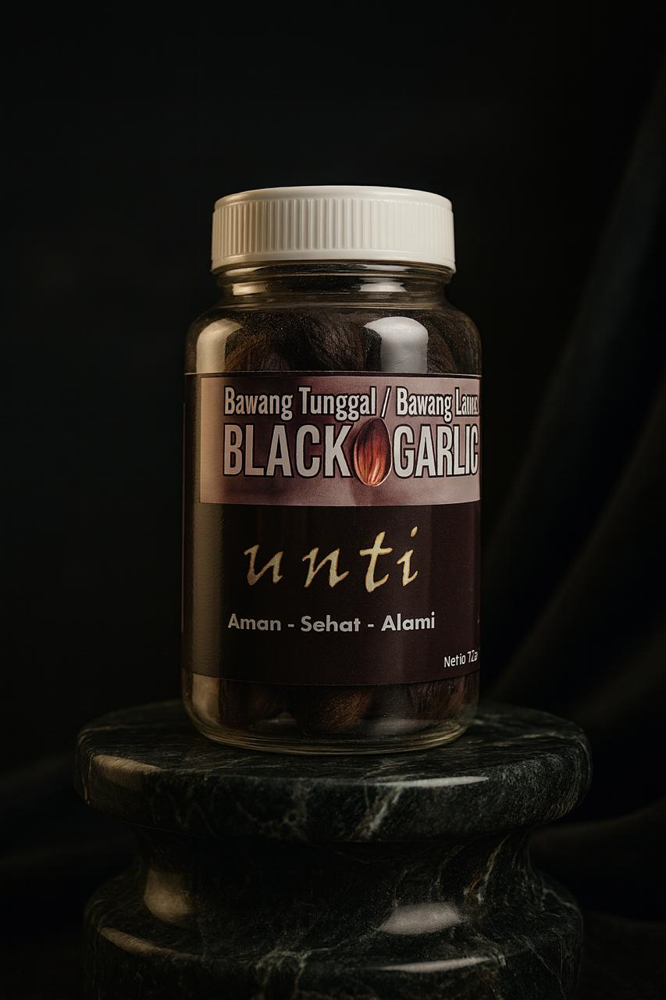
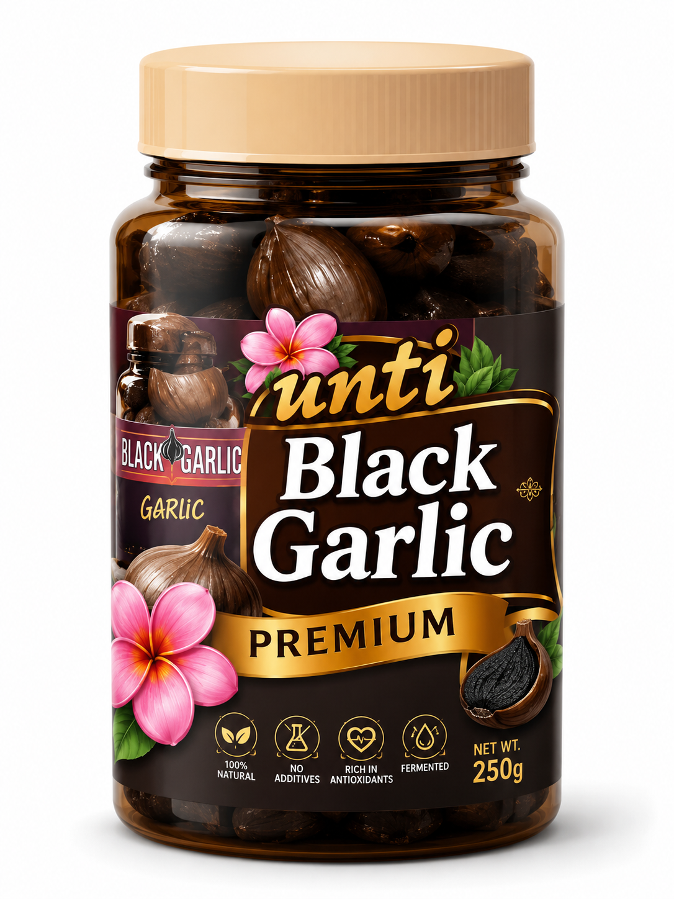

Selected from choice single-clove garlic
We start with carefully chosen whole garlic bulbs and keep the ingredient list beautifully simple.
Premium black garlic from Surabaya
Nature's sweet, savory superfood, slowly fermented for deep umami flavor and everyday wellness.

Black Garlic is made from single-clove garlic that is fermented to create antioxidant compounds at a higher level than regular garlic. Used regularly, it can help support the immune system.
A clean, premium pantry staple made for health-conscious homes, curious cooks, and anyone who wants natural flavor with purpose.
We start with carefully chosen whole garlic bulbs and keep the ingredient list beautifully simple.
Slow heat and humidity transform sharp garlic into mellow, sweet, dark cloves with rich umami.
Small-batch care from Surabaya, Indonesia, with a focus on consistency, freshness, and trust.

Signature Jar
Soft, caramel-like cloves ready for daily wellness rituals, rice bowls, sauces, marinades, and cheese boards.
Customers come for the benefits and stay for the mellow, savory sweetness.
It tastes naturally sweet and savory, not harsh at all. I add one clove to breakfast almost every day.Rani, Surabaya
The texture is soft and premium. It makes simple fried rice and sauces taste much deeper.Arif, Sidoarjo
A trustworthy local product from Surabaya. Clean packaging, fast response, and excellent quality.Maya, Jakarta